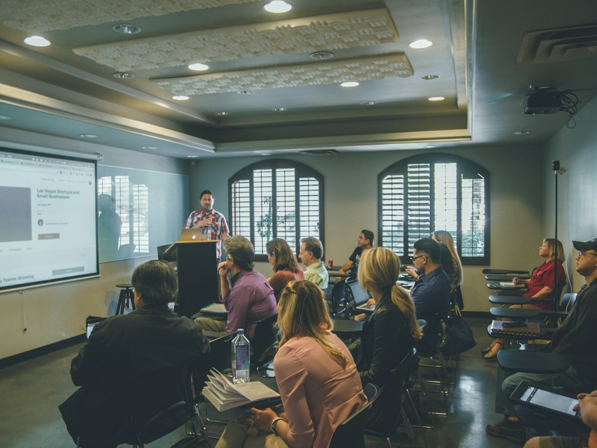
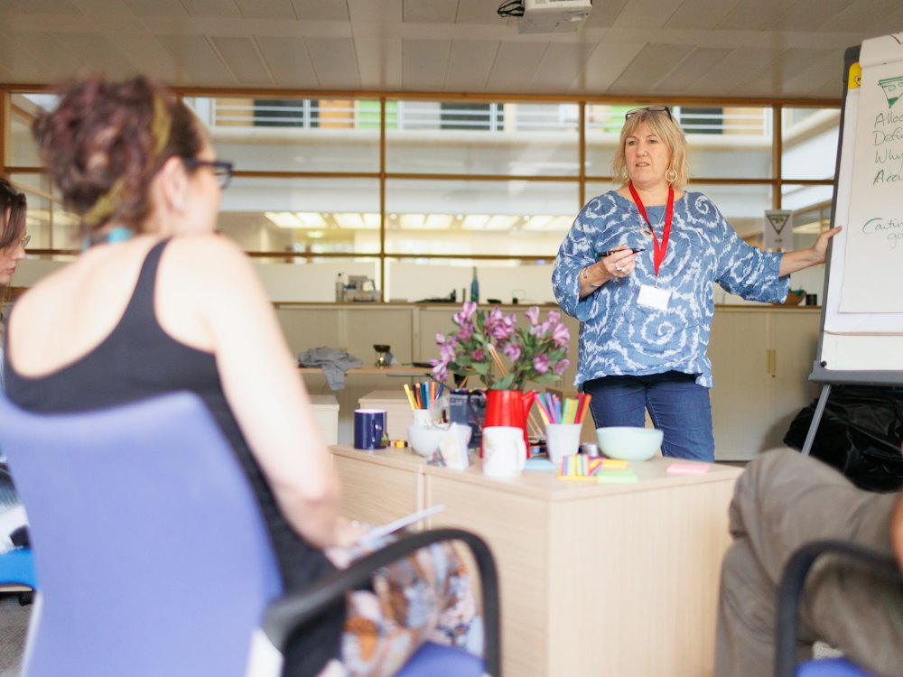
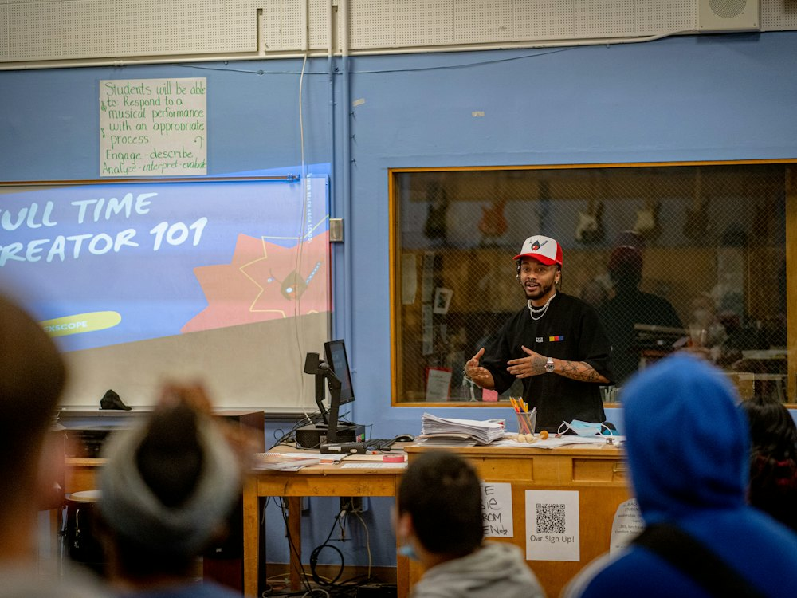
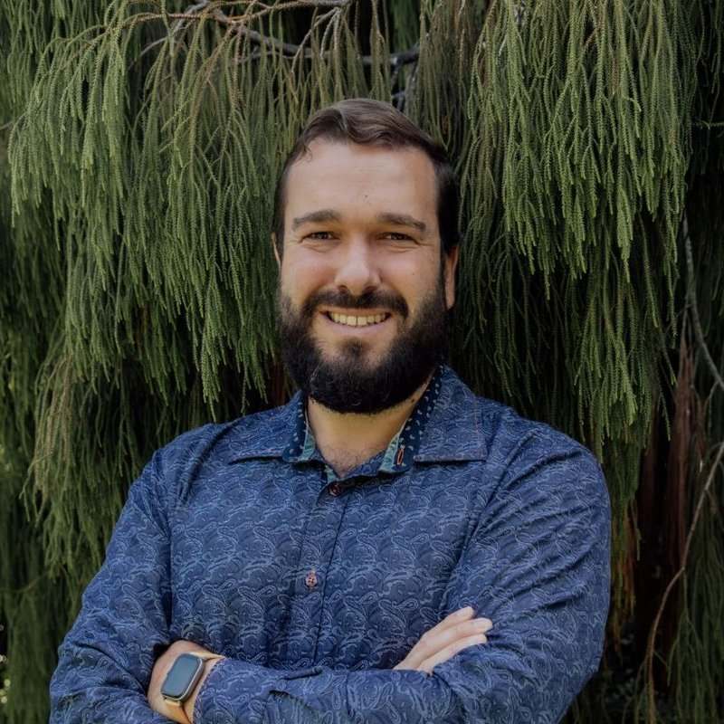

01
IA e inteligencia humana
Dónde ayuda la tecnología, dónde estorba y qué debería seguir siendo siempre humano.
Soy Diego, docente. Exploro cómo la IA, la investigación y la conexión humana pueden ayudarnos a repensar el aprendizaje, y comparto lo que encuentro porque lo disfruto y espero que algo de esto ayude a otra persona que enseña.
Por Diego Guevara, educador científico.

Un saludo de seis minutos: por qué comparto esto y qué vas a encontrar aquí. El vídeo está en inglés.
Se reproduce desde YouTube solo cuando pulsas el botón.
Dónde ayuda la tecnología, dónde estorba y qué debería seguir siendo siempre humano.
Por qué sentirse visto es tantas veces el principio del aprendizaje.
Qué dice la investigación, con cuánta seguridad podemos decirlo y de qué sigo sin estar seguro.
Cómo el trabajo rutinario le quita al estudiante la atención que merece, y qué podría ayudar.
Pensamiento crítico y responsabilidad sobre el propio aprendizaje en tiempos de respuestas instantáneas.
Cambios pequeños y cuidadosos que hacen la jornada un poco más tranquila.

En cada sala hay alguien que necesita ser visto.
Photo: Quilia / UnsplashEn cada aula hay personas que aprenden de maneras distintas. Atender a cada una es difícil cuando el profesorado está cansado y el día está lleno de tareas rutinarias.
No creo que la respuesta sea pedirle más al profesorado. Exploro cómo quitar lo que no necesita a una persona, para que lo que sí la necesita tenga espacio.
Todos reciben lo mismo. Las diferencias pasan desapercibidas.
Cada persona que aprende es vista y acompañada de la manera que le conviene.
Las tareas repetitivas le quitan atención al aula. Me interesa saber qué se puede simplificar con seguridad y qué no.
La tecnología puede proponer. Las personas revisan, deciden y hablan con quienes aprenden y con sus familias.
El tiempo y el espacio mental son el verdadero recurso. Exploro cómo devolver algo de ambos.

La tecnología propone. Las personas deciden.
Photo: Centre for Ageing Better / UnsplashCosas que me han resultado útiles, compartidas con la esperanza de que ayuden a otra persona que enseña. Nada está a la venta. Los vídeos están en inglés.
 Nuevo
NuevoTres consejos: convertir notas rápidas de corrección en retroalimentación personal, una agenda semanal a partir de una lista de tareas y una lista de verificación a partir de una presentación del curso. El vídeo está en inglés.
 Vídeo
VídeoTres consejos: un correo cálido a las familias, una explicación adaptada para tres estudiantes y una guía de estudio con cuestionario y una actividad de autoevaluación. El vídeo está en inglés.
Reflexiones y notas de lectura, más o menos una al mes. No hay calendario ni presión. Prefiero escribir una cosa que merezca la pena leer.

El tiempo para escuchar es el verdadero recurso.
Photo: LexScope / UnsplashNada aquí está a la venta ni se ofrece ningún servicio. Los ejemplos son inventados, y lo digo. Uso la IA para ayudarme a redactar, y lo leo y edito todo yo mismo. Las opiniones son mías.

Soy educador científico y doy clase a estudiantes de distintas edades y materias. Me interesa cómo la IA, la investigación y la conexión humana pueden ayudarnos a repensar el aprendizaje.
Este es un lugar personal donde pienso en voz alta: lo que voy notando, de lo que no estoy seguro y las ideas que sigo poniendo a prueba.
Cuéntalo en los comentarios de cualquier vídeo. Los leo y aprendo de ellos.